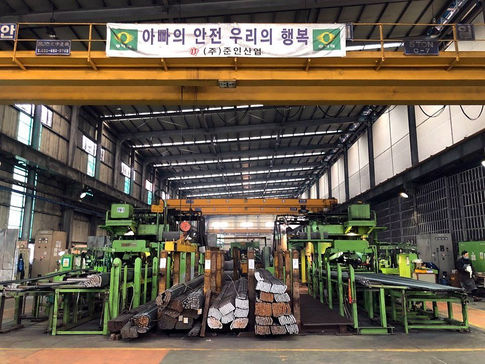
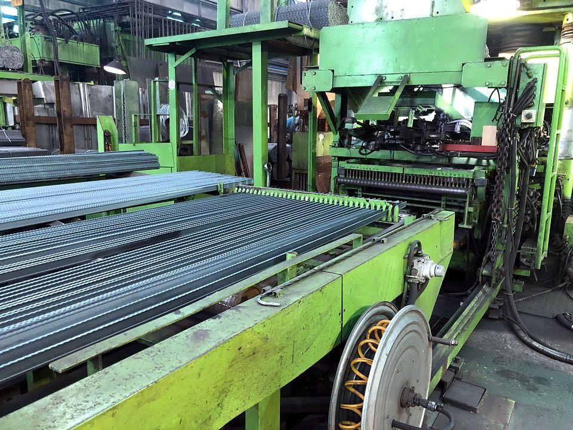
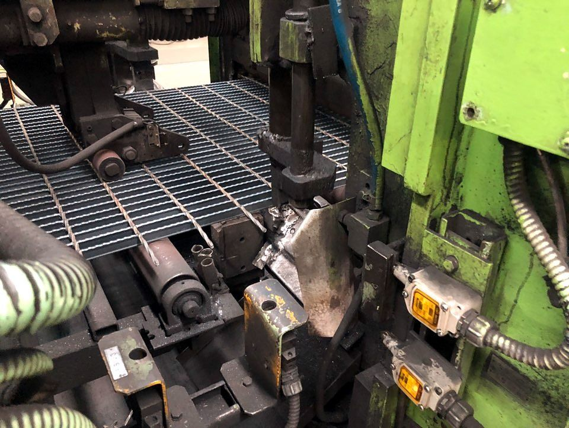
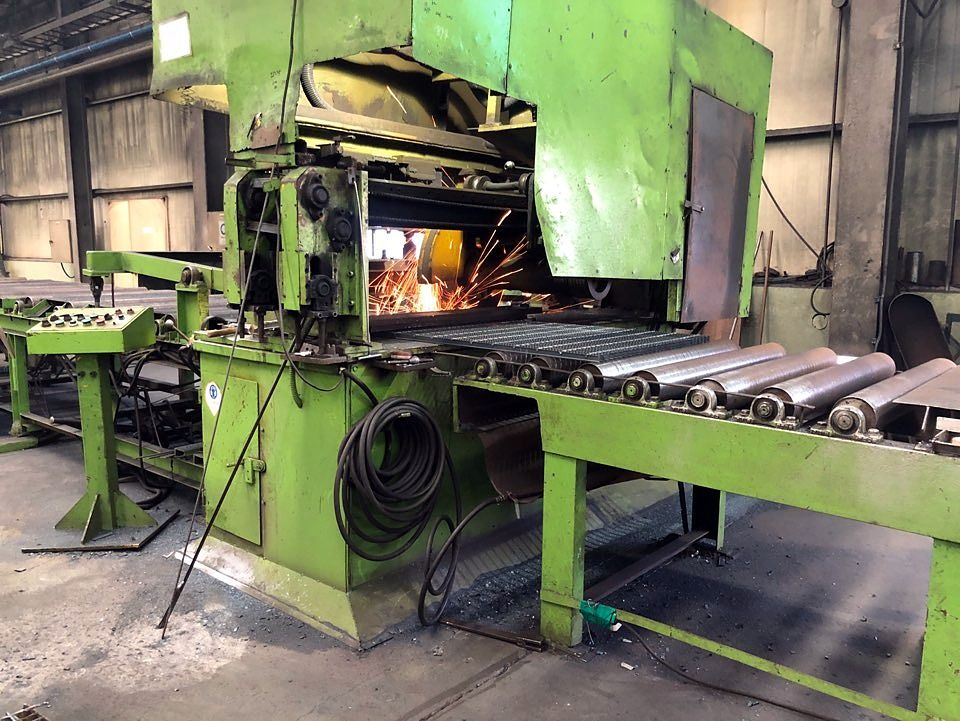
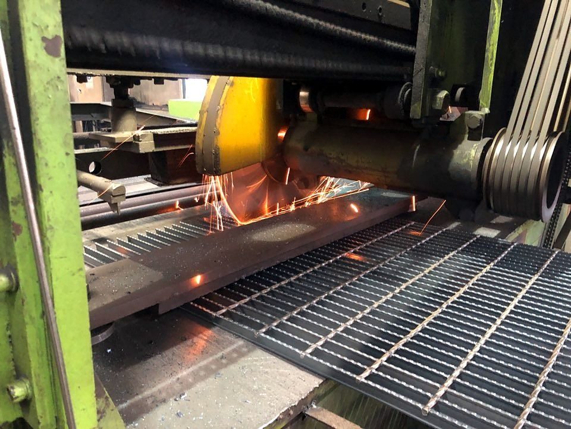
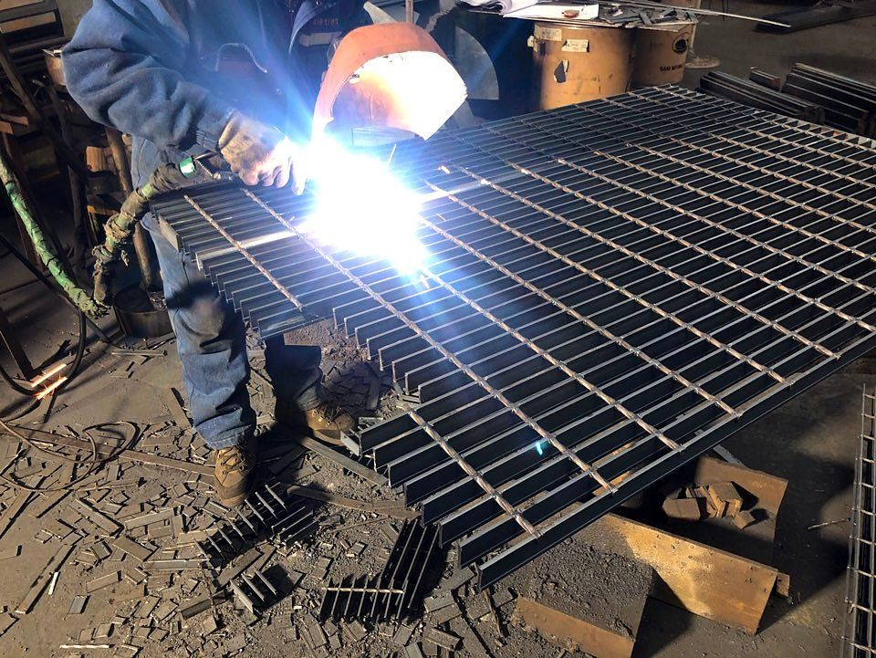
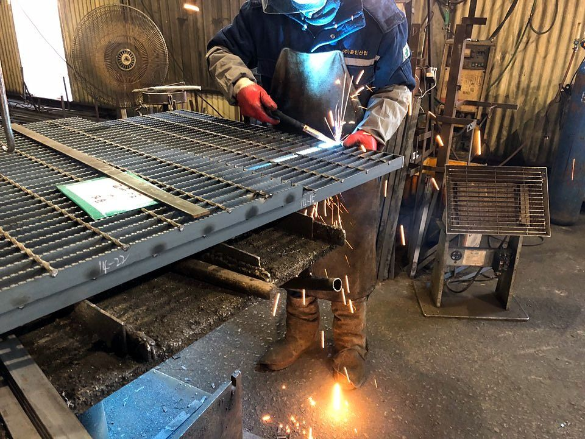
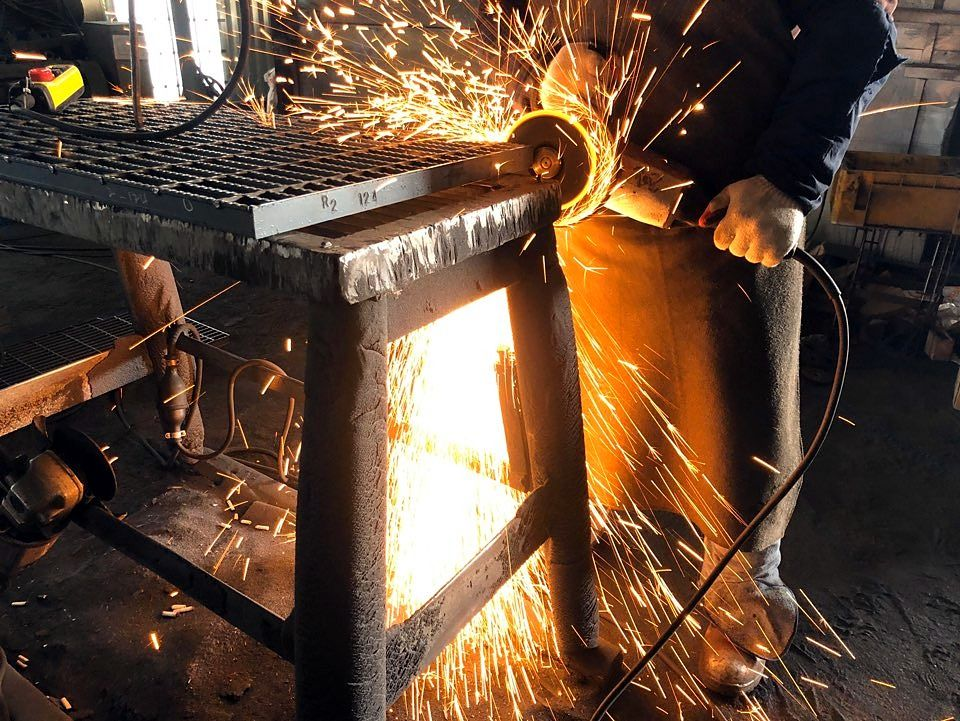
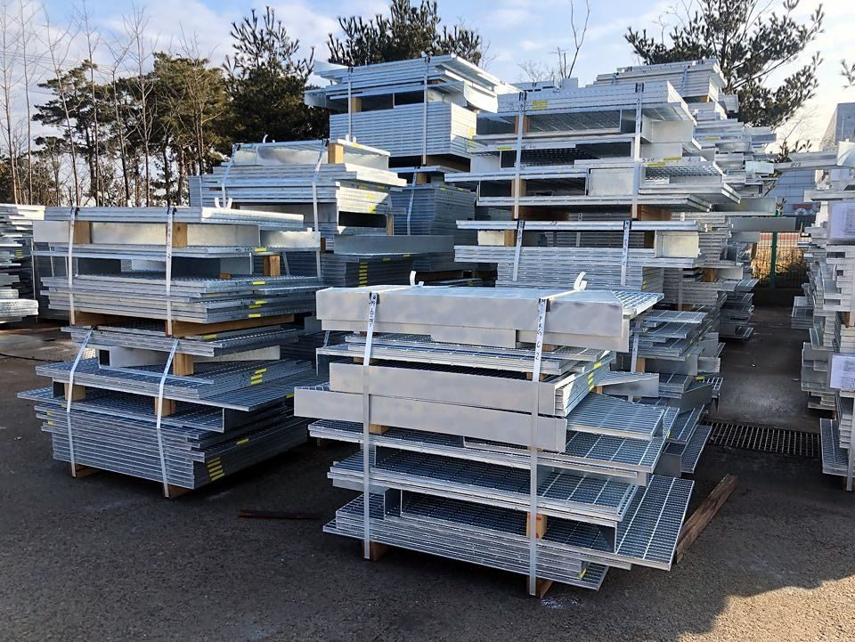
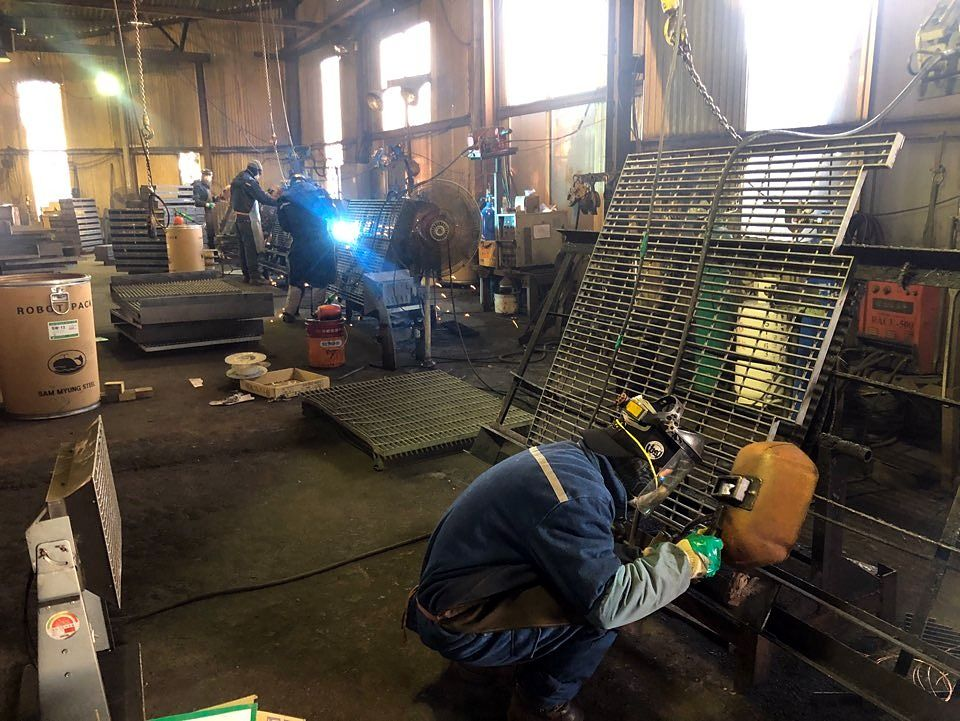

- 3기2,230kVA급 그레이팅 자동 압접기
- 월 최대1,000톤그레이팅 생산능력
- 약9,000평사업장 부지
- 평균31년압접 핵심 인력 경력
Equipment
주요 설비
그레이팅의 품질은 압접에서 결정됩니다. 준인산업은 일본 Nisseki사와 태양공업의 2,230kVA급 자동 압접기 3기를 동시에 가동해, 큰 프로젝트 물량과 급한 납기를 함께 소화합니다.




| 구분 | 설비 | 사양 | 수량 |
|---|---|---|---|
| 그레이팅 제조 | 자동 압접기 (Auto projection welding M/C) | 2,230kVA, 2 bar(크로스 바 2개 동시 압접), Nisseki Eng.(일본) 1기·태양공업 2기 | 3 |
| 그레이팅 제조 | 고속 절단기 | 30kW × 2P | 3 |
| 그레이팅 제조 | 디스크 절단기 | 3.7kW × 4P | 3 |
| 그레이팅 제조 | 톱날 연삭기 | 외경 609mm × 10mm, 독일산 | 2 |
| 그레이팅 제조 | CO2·아크 용접기 | 500A, 20~25kVA | 15 |
| 기계가공 | 선반·밀링·레이디얼 드릴·드릴·평면 연삭기 | 화천기계 등 | 11 |
| 운반 | 천장크레인 | 3톤·5톤 | 4 |
| 운반 | 호이스트 | 1톤 | 8 |
| 운반 | 지게차 | 3톤 | 2 |
| 계측·시험 | 정반, 하이트·실린더 게이지, 마이크로미터, 도금 두께 측정기 등 | 대부분 일본산 | 31 |
10 Steps
제작 공정 10단계
모든 제품은 고객의 도면에 맞춰 만들고, 출고 전까지 세 번 검사합니다. 빨간 번호가 검사 단계입니다.
- 01
원자재 구매
국내 압연바 제조사에서 SS400·SS275 압연바를 들여옵니다.
- 02
자동 압접
베어링 바와 크로스 바를 전기 저항 압접으로 한 몸으로 만듭니다.
- 03
제작
도면 치수대로 절단하고 엔드 바, 개구부 보강을 용접합니다.
- 04
제작 검사
치수와 용접 상태를 NAAMM 공차 기준으로 확인합니다.
- 05
도금
KS D 8308·JIS H8641·ASTM A123 기준 용융아연도금을 합니다.
- 06
도금 검사
도금 두께와 표면 상태를 측정합니다.
- 07
최종 검사
수량, 제작표시, 최종 치수를 확인합니다.
- 08
포장
현장 설치 순서에 맞춰 묶고 표시합니다.
- 09
운반
납기일에 맞춰 현장으로 출고합니다.
- 10
설치
고정 클립 등으로 현장에 설치합니다.




Quality
품질관리
- 치수 공차
- 미국 건축금속제조협회(NAAMM) 기준을 따릅니다.
- 3단계 검사
- 제작 검사, 도금 검사, 최종 검사를 품질관리부가 맡고, 계측·시험 장비 31점으로 측정합니다.
- 인증
- ISO 9001(품질)·ISO 14001(환경), 인증범위 '그레이팅 및 철구조물의 제조', 2028년 5월 25일까지 유효
- 자재 추적
- 제품마다 제작표시를 달고, 작업지시번호로 도면부터 출고까지 관리합니다.
People
압접기를 다루는 사람의
압접기를 다루는 사람의
평균 경력 31년
자동 압접기가 아무리 좋아도, 압연바와 전류의 차이를 읽는 것은 사람입니다. 준인산업 기계 압접부는 30년 넘게 그레이팅만 만들어 온 인력이 중심입니다.

| 부서 | 인원 | 맡는 일 |
|---|---|---|
| 기계 압접부 | 5명 | 자동 압접기 운전, 평균 경력 31년 |
| 제작부 | 11명 | 절단, 용접, 가공 |
| 포장부 | 3명 | 포장, 출고 |
| 품질관리부 | 3명 | 제작·도금·최종 검사 |
| 생산관리본부 | 2명 | 공정·납기 관리 |
| 기업부설연구소 | 4명 | 설계, 하중 검토 |